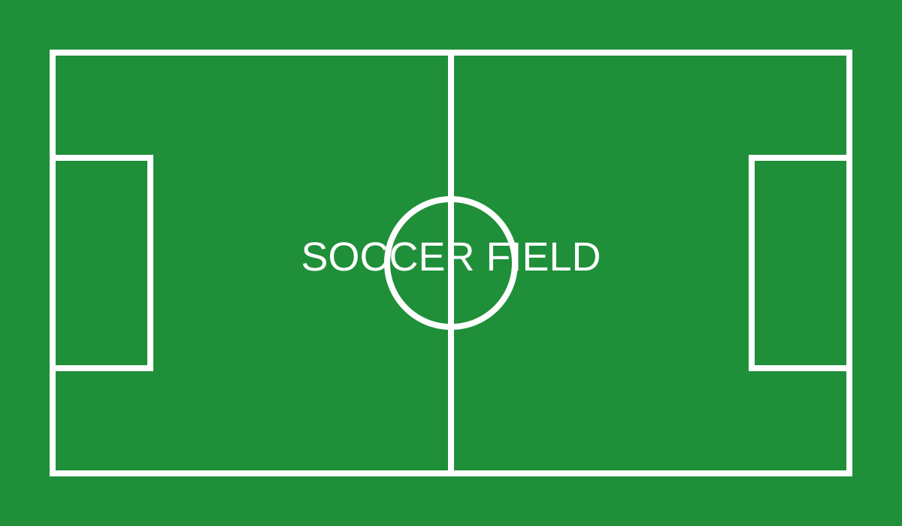
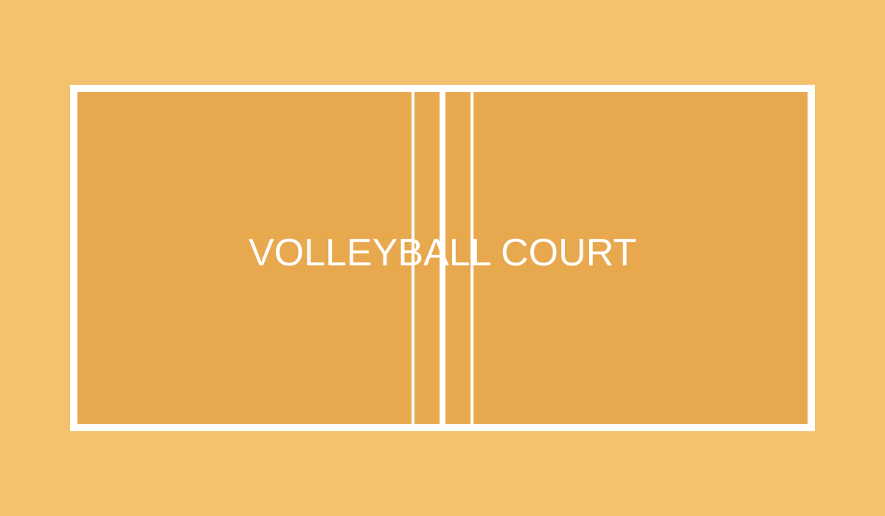
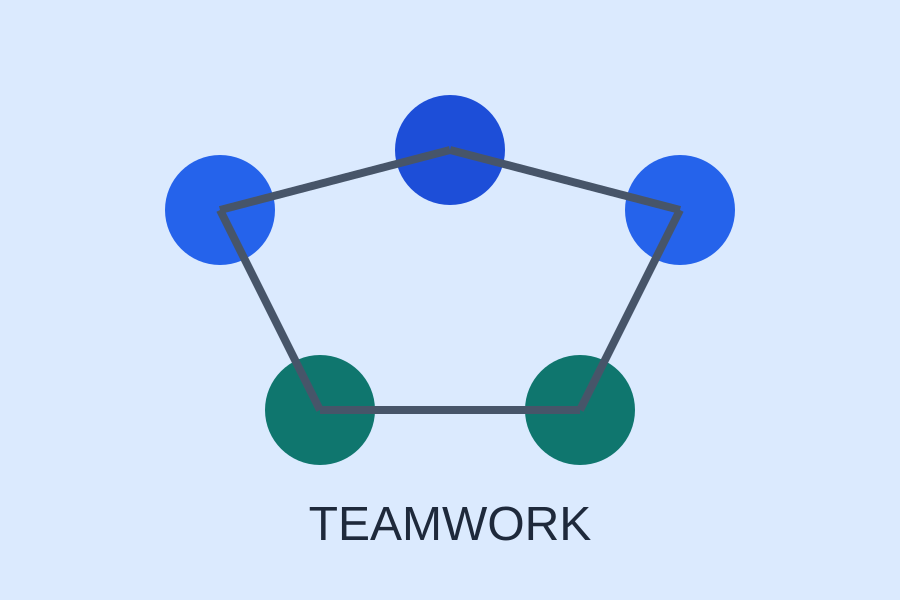
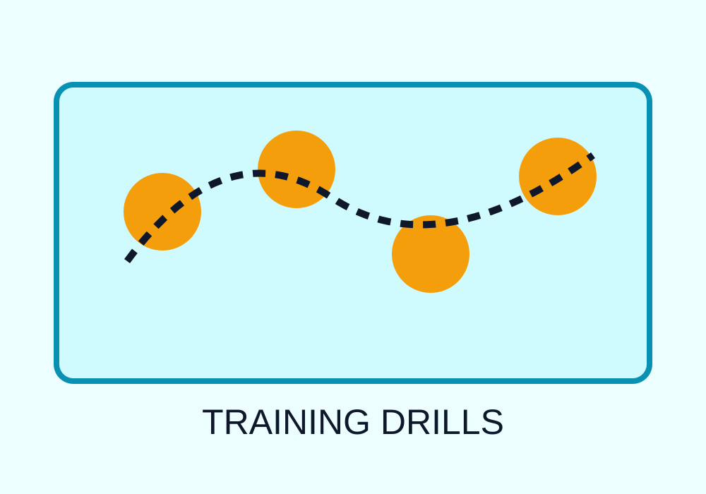

Soccer Basics
Learn about fitness, passing, finishing, teamwork, and the importance of practice routines.
Final Project Website

Learn about fitness, passing, finishing, teamwork, and the importance of practice routines.

Review serving, setting, defense, communication, and how movement affects the game.

Both sports require discipline, communication, consistency, and a strong team mentality.
Sports help people build endurance, confidence, leadership, and healthy habits. They also teach athletes how to handle success and failure with maturity.
Soccer and volleyball are especially popular because they combine skill, speed, and teamwork. Players must think quickly, stay active, and trust the people around them.

These external websites provide more information about sports, rules, and training: